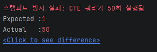
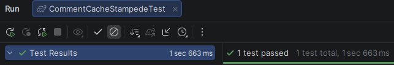
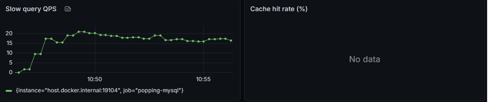
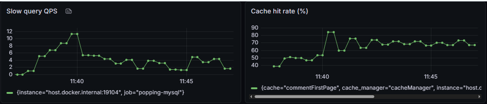

댓글 첫 페이지 캐싱
인기 게시글 진입마다 계층형 댓글 트리를 재귀 CTE로 다시 조립하고 있었습니다.
공통 데이터만 캐시하고 개인화 데이터는 조회 시 합성하는 Cache-Aside 구조로 개선했습니다.
같은 댓글 트리를 10분간 6,642번 다시 만들고 있었습니다
게시글 상세 조회 시 댓글 첫 페이지가 함께 내려가는 구조인데, 대댓글을 포함한 트리를 재귀 CTE로 매번 조회했습니다.
Slow Query Log(long_query_time=1s + log_queries_not_using_indexes=ON)를 분석하니
JMeter 100 VUser 부하 테스트 10분 동안 동일한 계층형 조회가 6,642회 반복 실행됐고, 인기 게시글 댓글 조회 응답시간은 152ms까지 올라갔습니다.
반복 실행되던 재귀 CTE
WITH RECURSIVE comment_tree AS (
SELECT ..., CAST(LPAD(c.id,10,'0') AS CHAR(1000)) AS path
FROM comment c
WHERE c.post_id = ? AND c.parent_id IS NULL
UNION ALL
SELECT ..., CONCAT(ct.path,'-',LPAD(c.id,10,'0'))
FROM comment c
JOIN comment_tree ct ON c.parent_id = ct.id
)
SELECT ... FROM comment_tree
ORDER BY path LIMIT ? OFFSET ?
재귀 단계에서 자식을 반복 JOIN해 트리를 구성하므로, 댓글이 많고 깊을수록 중간 결과 집합이 커지고 동시 요청 시 DB 스레드 경합이 발생합니다.
캐시 적용 전 측정치 (10분 구간)
테스트 환경: EC2 t2.micro(1vCPU/1GB), 게시글 100만·댓글 1,000만 건, JMeter 100 VUser. 실제 커뮤니티 트래픽을 반영해 읽기 90% / 좋아요 8% / 작성 2% 비율과 80/20 인기 게시물 집중(상위 20개 게시물에 80% 트래픽) 시나리오로 구성했습니다.
공통 데이터만 캐시하고, 변동 데이터는 조회 시 합성
핵심은 응답 전체를 무작정 캐시하지 않은 것입니다. 트리 구조처럼 자주 바뀌지 않는 공통 데이터만 캐시하고,
수시로 변하는 likeCount와
사용자마다 다른 likedByMe는 조회 시점에 IN절 배치 쿼리로 합성합니다.
캐시 전략 비교
| 검토 방식 | 검토 결과 | 판단 |
|---|---|---|
| Write-Through | 댓글은 몇 초 늦게 보여도 되는 도메인이라 즉시 최신 보장이 불필요. 동시 쓰기 시 느린 재조립이 최신 캐시를 덮어쓰는 정합성 문제도 존재 | 기각 |
| 부분 무효화 | 불변 응답 구조(record)라 일부 노드만 바꿔도 상위 경로 전체를 재생성해야 해 비용 이점이 없음 | 기각 |
| Cache-Aside + 조회 시 합성 ✓ | 트리 구조는 모든 사용자에게 동일하고 댓글 생성/삭제 시에만 변해 캐시 효율이 높음. 변동/개인화 데이터는 캐시에서 제외 | 채택 |
조회 흐름
Client → cache.get(postId)
├─ HIT → 캐시 트리 반환
│ + likeCount 합성 (Comment IN절 1회)
│ + likedByMe 합성 (likes IN절 1회)
└─ MISS → 재귀 CTE 1회 → 캐시 저장 → 합성 → 반환
[댓글 작성/삭제]
DB 커밋 완료 → AFTER_COMMIT 이벤트
→ cache.evict(postId)
캐시 히트 시 쿼리 7개 → 5개. 특히 가장 무거운 재귀 CTE·작성자 조회가 사라집니다.
무효화 전략
| 이벤트 | 무효화 | 이유 |
|---|---|---|
| 댓글 작성/삭제 | 커밋 후 evict | 트리 구조 자체가 변경됨 |
| 좋아요/싫어요 | evict 없음 | likeCount를 캐시에서 제외해 무효화 불필요 |
| TTL 10분 | 자동 만료 | 방치된 캐시의 최종 안전망 |
트랜잭션 안에서 바로 evict하면 evict 후 커밋 전 구간에 다른 스레드가 미커밋 이전 상태를 다시 캐시에 올릴 수 있습니다.
@TransactionalEventListener(AFTER_COMMIT)으로 evict 시점을 커밋 완료 이후로 이동했고,
롤백 시에는 이벤트가 발행되지 않아 캐시가 유지됩니다 — 정합성상 올바른 동작입니다.
캐시 스탬피드 — evict 직후 CTE가 10~17건 동시 실행
캐시 검증 중 Slow Query Log에서 이상 패턴을 발견했습니다. evict 직후 동시 요청이 몰리면
모든 스레드가 "캐시 없음"을 보고 각자 buildCommentPage()를 실행 —
동일 postId의 CTE가 10~17건 동시에 실행됐습니다. get → put 두 연산이 분리되어 있기 때문입니다.
| 검토 방식 | 검토 결과 | 판단 |
|---|---|---|
| synchronized 더블 체크 | 인스턴스 단위 락 — postId=1 로딩이 끝날 때까지 postId=2, 3 요청까지 전부 대기. 락 범위가 과도하게 넓음 | 기각 |
| ConcurrentHashMap per-key 락 | key 단위로 좁힐 수 있으나 락 객체의 생명주기(생성/제거)를 직접 관리해야 함 | 기각 |
| Caffeine cache.get(key, Callable) ✓ | 내부적으로 computeIfAbsent 기반 per-key 원자적 로딩. 락 생명주기를 캐시 엔트리에 맞춰 자동 관리. Redis 전환 시 분산 락으로 교체 예정 | 채택 |
evict 직후 동시 50요청 — CTE 실행 횟수

동일 postId CTE가 10~17건 중복 실행 (HikariCP 여유 커넥션 수에 따라 비결정적).

CTE 1건 고정. 나머지 49건은 per-key 락 대기 후 캐시 히트로 처리.
* JMeter SyncTimer(groupSize=50)로 50개 요청을 동시 출발시키고, CountDownLatch 기반 동시성 단위 테스트로도 CTE 실행 횟수 1건을 검증했습니다.
가장 무거운 재귀 CTE가 캐시 히트 시 사라졌습니다
| 지표 | 캐시 전 | 캐시 후 | 변화 |
|---|---|---|---|
| GET comments (Hot) | 152ms | 43ms | -71.7% |
| GET comments (Normal) | 66ms | 40ms | -39.4% |
| 게시글 상세 (Hot) | 88ms | 52ms | -40.9% |
| 전체 평균 응답시간 | 260ms | 181ms | -30.4% |
| CTE 실행 (10분) | 6,642건 | 458건 | -93% |
| 슬로우 쿼리 총계 | 10,119건 | 2,468건 | -76% |
Slow Query · 캐시 히트율 대시보드

캐시 적용 전 — CTE 슬로우 쿼리가 지속적으로 누적된다.

캐시 적용 후 — 슬로우 쿼리가 -76% 감소하고 캐시 히트율(recordStats)이 함께 관측된다.
트레이드오프
- 댓글 작성/삭제마다 eviction이 발생 — 쓰기 비율이 높은 환경에서는 캐시가 채워지기 전에 비워집니다. 읽기 편향(90:10) 커뮤니티 트래픽이라 효과적입니다.
- 캐시는 JVM 힙에 적재 — 메모리가 부족한 환경에서는 GC 빈도를 높일 수 있어
maximumSize=500으로 상한을 제어합니다. - 캐시 히트 시에도 likeCount·reaction 합성 쿼리는 항상 실행 — 트래픽이 더 증가하면 이 조회들이 다음 최적화 대상입니다.
"응답 전체를 캐시하는 대신, 안정적인 공통 데이터와 변동·개인화 데이터의 역할을 분리한 것이 이 설계의 핵심입니다."
다른 문제 해결 사례도 있습니다
동시 좋아요 요청의 유니크 제약 예외를 멱등 처리로 해결한 과정을 이어서 확인할 수 있습니다.